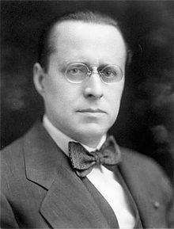

어니스트 코미어
Ernest Cormier OC (1885년 12월 5일 – 1980년 1월 1일)는 캐나다의 엔지니어이자 건축가였습니다.
그는 몬트리올 지역 에서 많은 경력을 쌓았으며 Université de Montréal 본관 건물, 오타와의 대법원 건물,
Cormier House (몬트리올의 골든 스퀘어 마일 에 있는 그의 집 ) 를 포함하여 주목할만한 아르데코 건축 의 사례를 설계했습니다.

어니스트 코미어의 일생
- 1.Cormier는 의사의 아들로 몬트리올에서 태어나 몬트리올의 에콜 폴리테크니크 에서 토목 공학을 공부했습니다.
- 2.1917년 1월 파리로 돌아온 그는 콘크리트 전문가인 Considère, Pelnard et Caquot의 엔지니어링 회사에 고용되었으며
프랑스 정부(DPLG)의 건축가로 졸업했습니다. - 3. 1921년부터 1954년까지 몬트리올에 있는 에콜 폴리테크니크의 교수였습니다.
- 4.1980년 사망한 후 그는 몬트리올의 노트르담 데 네쥬 묘지 에 묻혔습니다.